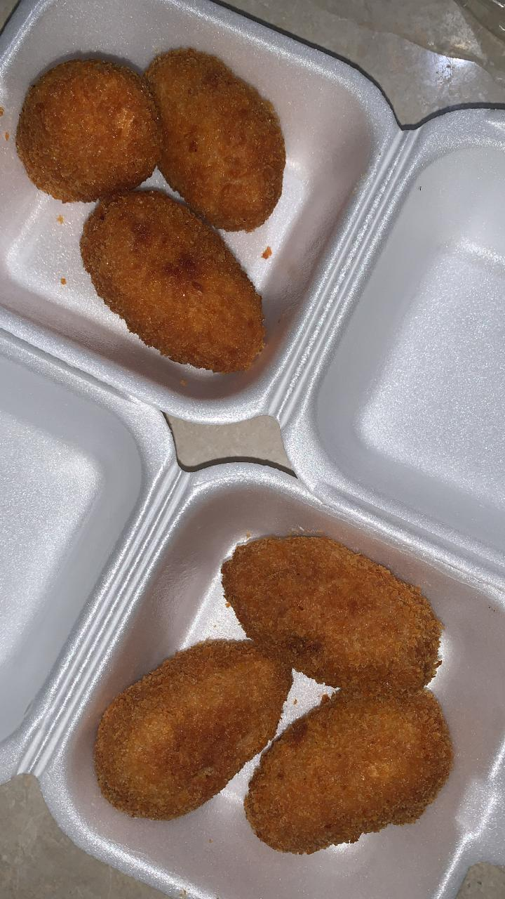
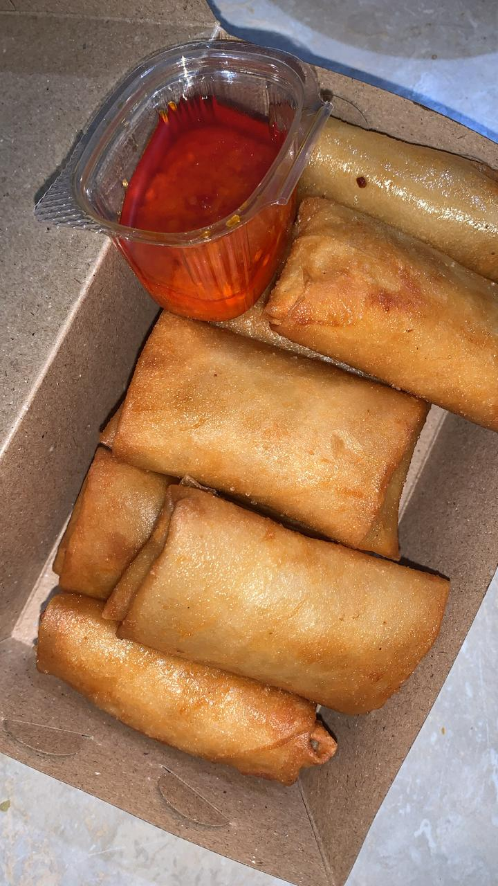
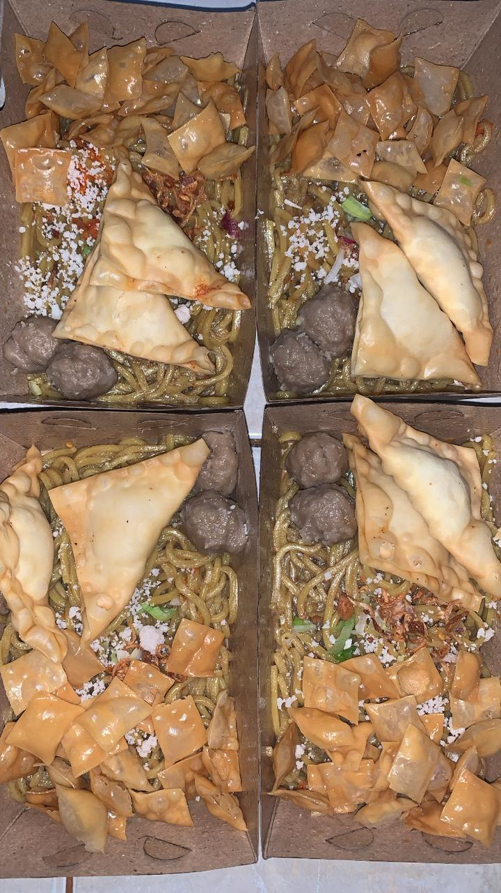

Udang Keju
Udang keju adalah cemilan gurih dan lezat yang terbuat dari olahan daging udang dan keju sebagai bahan dasar utamanya. Hidangan ini menggabungkan cita rasa ulami dari udang dengan kelembutan dan kekayaan rasa keju yang lumer saat digigit.
Rp.15.000

Dimsum Keju Goreng
Dimsum goreng keju adalah cemilan kekinian yang terbuat dari adonan daging (seperti ayam atau udang) yang dibungkus kulit tipis, diberi isian keju yang meleleh, lalu digoreng hingga luarnya garing dan kejunya lumer di dalam
Rp.20.000

Mie Jebew
Mie jebew adalah hidangan mie pedas khas Garut yang populer karena cita rasanya yang pedas, gurih, dan sedikit manis, yang berasal dari racikan minyak cabai dan minyak bawang.
Rp.15.000